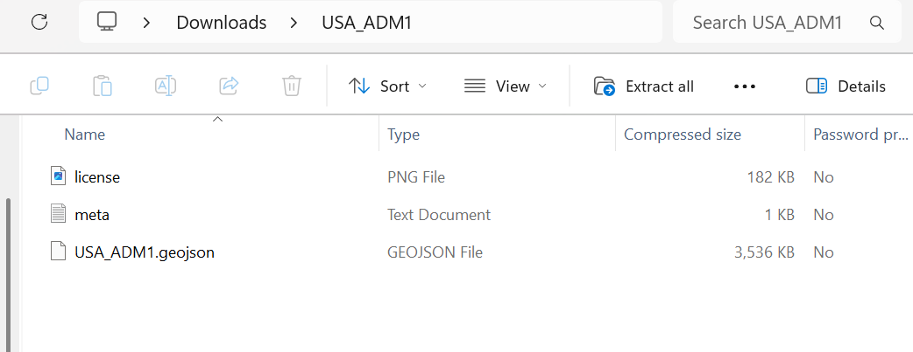

Project Structure
When starting an open issue that is listed on the geoBoundaries GitHub, it is important to first understand the existing boundary in order to identify the problem. Follow the instructions from the downloading data page to access the current dataset.
Overarching Folder
All work should be contained within a single folder named: ISO_ADM#, corresponding to the ISO Code of the issue and the administrative division level.
Example: USA_ADM1
This folder name must match: - The issue title - The dataset name - The GeoJSON name
Expected Folder Contents
The folder should contain the following files:
- Boundary file (GeoJSON or shapefile)
meta.txt(metadata file)license.png(license screenshot)
A description of what each file should contain is listed at this page.
Example Folder Structure

USA_ADM1/
│
├── USA_ADM1.geojson
├── meta.txt
└── license.png
Boundary File (GeoJSON)
The boundary file contains:
- Polygon geometry for all administrative units
- The attribute table with required fields
Naming Rules
- Must match the folder name exactly:
ISO_ADM# - No spaces or special characters
Requirements
- Correct ADM Level
- Valid geometry (no broken polygons)
- Complete attribute table
Common Mistakes
- Incorrect folder name (not matching
ISO_ADM#) - Missing files
- Mismatched file names (e.g. when the folder name does not match the GeoJSON file name)
- Including extra unnecessary files
- Using spaces or inconsistent naming